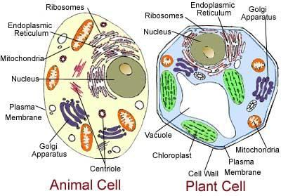

The necessary matter and resurrected creatures will be ejected from the Thaqal through the Seven Tracts to form the Land of Judgment in the Super Space. This Land will remain connected to the Thaqal by these Tracts. After Judgment and Salvation, the matter of the Land and the Unbelievers heading to Hell will return to the Thaqal (Heavy Mass) through the same Tracts. The Thaqal will unroll and recreate the universe, containing the objects of Hell (galaxies). [Judgment Day is deliberately discussed in Section 6 of Chapter 39]
প্রয়োজনীয় বিষয় এবং পুনরুত্থিত প্রাণীরা সুপার স্পেসে বিচারের ভূমি গঠনের জন্য সাতটি ট্র্যাক্টের মাধ্যমে থাকাল থেকে বের করে দেওয়া হবে। এই জমি এই ট্র্যাক্ট দ্বারা থাকালের সাথে সংযুক্ত থাকবে। বিচার ও পরিত্রাণের পর, ভূমি এবং অবিশ্বাসীদের জাহান্নামে যাওয়ার বিষয়টি একই ট্র্যাক্টের মাধ্যমে থাকাল (ভারী ভর) এ ফিরে আসবে। থাকাল নরকের বস্তু (গ্যালাক্সি) ধারণ করে মহাবিশ্বকে উন্মোচন করবে এবং পুনরায় তৈরি করবে। [বিচারের দিন 39 অধ্যায়ের ধারা 6 এ ইচ্ছাকৃতভাবে আলোচনা করা হয়েছে]
And We send down water from the sky according to measure, and We cause it to soak in the soil, and We certainly are able to drain it off. With it, We grow for you gardens of date-palms and vines. In them, have you abundant fruits, and of them you eat. Also a tree springing out of Mount Sinai, which produces oil and relish for those who use it for food.
আর আমি আকাশ থেকে পরিমাপ অনুযায়ী পানি বর্ষণ করি, অতঃপর তা মাটিতে ভিজিয়ে দেই এবং অবশ্যই তা নিষ্কাশন করতে সক্ষম। এর সাহায্যে আমরা তোমাদের জন্য খেজুর ও লতা-পাতার বাগান করি। তাদের মধ্যে, আপনি প্রচুর ফল আছে, এবং আপনি তাদের খাওয়া. এছাড়াও সিনাই পর্বত থেকে উৎপন্ন একটি গাছ, যা খাবারের জন্য যারা এটি ব্যবহার করে তাদের জন্য তেল এবং স্বাদ তৈরি করে।
All of our foods, except water and salt, are organic products. We have similar cells.
পানি এবং লবণ ছাড়া আমাদের সব খাবারই জৈব পণ্য। আমাদের অনুরূপ কোষ আছে।
FIGURE 23.10: Animal Cell and Plant Cell There is hardly any difference between animal cells and plant cells, yet plants do not require as much protection to grow. A tiny seed, falling to the earth during the dry season, can germinate with just a little rain. If plants can grow from the land, then humans should also be able to resurrect from it, provided the right conditions are in place. The resurrection of the dead will be natural in the revived initial universe, in the state of Thaqal (Heavy Mass). Each human will be resurrected from a set of double- helix DNA molecules collected from the remains of their earthly body. DNA is the blueprint of life, and the Quran mentions the DNA molecule as the instrument of resurrection (discussed in Section 3 of Chapter 31).

চিত্র 23_10 / Figure 23_10
চিত্র 23.10: প্রাণী কোষ এবং উদ্ভিদ কোষ প্রাণী কোষ এবং উদ্ভিদ কোষের মধ্যে খুব কমই কোনো পার্থক্য আছে, তবুও উদ্ভিদের বৃদ্ধির জন্য তেমন সুরক্ষার প্রয়োজন হয় না। একটি ক্ষুদ্র বীজ, শুষ্ক মৌসুমে মাটিতে পড়ে, সামান্য বৃষ্টিতেই অঙ্কুরিত হতে পারে। যদি জমি থেকে গাছপালা জন্মাতে পারে, তাহলে মানুষেরও তা থেকে পুনরুত্থান করতে সক্ষম হওয়া উচিত, যদি সঠিক শর্ত থাকে। মৃতদের পুনরুত্থান স্বাভাবিক হবে পুনরুজ্জীবিত প্রাথমিক মহাবিশ্বে, থাকাল (ভারী ভর) অবস্থায়। প্রতিটি মানুষ তাদের পার্থিব দেহের অবশিষ্টাংশ থেকে সংগৃহীত ডাবল-হেলিক্স ডিএনএ অণুর একটি সেট থেকে পুনরুত্থিত হবে। ডিএনএ হল জীবনের ব্লুপ্রিন্ট, এবং কুরআন পুনরুত্থানের উপকরণ হিসাবে ডিএনএ অণুকে উল্লেখ করেছে (31 অধ্যায়ের 3 ধারায় আলোচনা করা হয়েছে)।
চিত্র 23_10 / Figure 23_10
And in cattle you have an instructive example: from within their bodies, We produce for you (milk) to drink, there are in them numerous benefits for you, and of their (meat) you eat, and on them as well as in ships you ride.
এবং গবাদি পশুদের মধ্যে আপনার একটি শিক্ষণীয় উদাহরণ রয়েছে: তাদের দেহের মধ্যে থেকে, আমরা আপনার জন্য পানীয় (দুধ) তৈরি করি, তাদের মধ্যে রয়েছে আপনার জন্য প্রচুর উপকারিতা, এবং তাদের (মাংস) আপনি খান এবং তাদের উপর এবং সেইসাথে জাহাজে চড়েন।
The cattle and the wood from which a ship is made have the same double helix DNA molecules. Chemically, they are the same, but their codes differ. One code produces cattle, while another code produces plants. There are microscopic unicellular animals that live and multiply in the land. Therefore, there should be no doubt about the resurrection from the land. When Allah provides the necessary support, humans will be resurrected from the land.
গবাদি পশু এবং কাঠ যা থেকে একটি জাহাজ তৈরি করা হয় একই ডাবল হেলিক্স ডিএনএ অণু আছে। রাসায়নিকভাবে, তারা একই, কিন্তু তাদের কোড ভিন্ন। একটি কোড গবাদি পশু উত্পাদন করে, অন্য কোড গাছপালা উত্পাদন করে। আণুবীক্ষণিক এককোষী প্রাণী আছে যারা ভূমিতে বাস করে এবং সংখ্যাবৃদ্ধি করে। অতএব, জমি থেকে পুনরুত্থান সম্পর্কে কোন সন্দেহ থাকা উচিত নয়। আল্লাহ যখন প্রয়োজনীয় সহায়তা প্রদান করবেন, তখন মানুষ ভূমি থেকে পুনরুত্থিত হবে।
Segment 2 Prophets that Failed
সেগমেন্ট 2 নবী যে ব্যর্থ হয়েছে
And indeed We sent Noah to his people, He said: "O my people, worship God, you have no other god but Him. Will you not guard?" The chiefs of the unbelievers among his people said: "He is no more than a man like yourselves; his wish is to assert his superiority over you; if God had wished, He could have sent down angels; never did we hear such a thing among our ancestors of old; he is only a man possessed; wait with him for a time." Said: "O my Lord, help me because they deny me." So, We inspired him: "Construct the Ark within Our sight and under Our guidance. Then when comes Our command and the fountains of the earth gush forth take you on board pairs of every species, male and female, and your family, except those of them against whom the Word has already gone forth. And address Me not in favour of the wrongdoers, for they shall be drowned. And when you have embarked on the Ark—you and those with you—say: "Praise be to God Who has saved us from the people who do wrong." And say: "O my Lord, enable me to disembark with your blessing; for You are the best to enable to disembark." Verily, in this there are indeed signs for sure; We are ever putting to the test. Section-4 of Chapter 23 [Verse 31-41]: Another Generation
এবং আমি নূহকে তার সম্প্রদায়ের কাছে প্রেরণ করেছি, তিনি বলেছিলেন: "হে আমার সম্প্রদায়, আল্লাহর ইবাদত কর, তিনি ছাড়া তোমাদের অন্য কোন উপাস্য নেই। তোমরা কি হেফাজত করবে না?" তার সম্প্রদায়ের অবিশ্বাসীদের সর্দাররা বললঃ সে তোমাদের মত একজন মানুষ ছাড়া আর কিছু নয়, তার ইচ্ছা তোমাদের উপর তার শ্রেষ্ঠত্ব জাহির করা; আল্লাহ ইচ্ছা করলে ফেরেশতা পাঠাতে পারতেন, আমাদের পূর্বপুরুষদের মধ্যে এমন কথা আমরা কখনো শুনিনি; সে তো একজন মানুষ মাত্র, তার সাথে কিছুক্ষণ অপেক্ষা কর। বললেনঃ হে আমার পালনকর্তা, আমাকে সাহায্য করুন কারণ তারা আমাকে অস্বীকার করেছে। তাই, আমরা তাকে অনুপ্রাণিত করেছিলাম: "আমাদের দৃষ্টিতে এবং আমাদের নির্দেশনায় সিন্দুকটি তৈরি করুন। তারপর যখন আমাদের আদেশ আসে এবং পৃথিবীর ঝর্ণাগুলি প্রবাহিত হয়, তখন আপনাকে সমস্ত প্রজাতির জোড়ায় জোড়ায়, নর-নারী এবং আপনার পরিবারকে নিয়ে যায়, তাদের মধ্যে যাদের বিরুদ্ধে বাণী ইতিমধ্যেই প্রকাশিত হয়েছে। আপনার সাথে বলুন: "সকল প্রশংসা আল্লাহর যিনি আমাদেরকে অন্যায়কারী লোকদের থেকে রক্ষা করেছেন এবং বলুন: "হে আমার প্রভু, আমাকে আপনার আশীর্বাদে অবতরণ করতে সক্ষম করুন।" কেননা অবতরণ করার জন্য আপনিই সর্বোত্তম।" নিঃসন্দেহে, এতে নিশ্চিতভাবে নিদর্শন রয়েছে; আমরা সর্বদা পরীক্ষা করছি। অধ্যায় 23 [আয়াত 31-41] এর ধারা-4: আরেকটি প্রজন্ম
Then We raised after them another generation. And We sent to them an apostle from among themselves, "Worship God! You have no other god but Him. Will you not guard?" And the chiefs of his people who disbelieved and denied the Meeting in the Hereafter, and on whom We had bestowed the good things of this life, said: "He is no more than a man like yourselves—he eats of that of which you eat, and drinks of what you drink; if you obey a man like yourselves, behold, it is certain you will be lost. Does he promise that when you die and become dust and bones, you shall be brought forth? Far, very far is that, which you are promised—there is nothing but our life in this world; we shall die and we live, but we shall never be raised up again! He is only a man who invents a lie against God. But we are not the ones to believe in him!" Said: "O my Lord, help me, for that they accuse me of falsehood." Said: "In but a little while they are sure to be sorry!" Then the Blast overtook them with justice and We made them as rubbish of dead leaves! So, away with the people who do wrong!
অতঃপর আমি তাদের পরে অন্য প্রজন্ম সৃষ্টি করেছি। অতঃপর আমি তাদের কাছে তাদের মধ্য থেকে একজন রসূল পাঠালাম, "তোমরা আল্লাহর ইবাদত কর, তিনি ছাড়া তোমাদের অন্য কোন উপাস্য নেই। তোমরা কি হেফাজত করবে না?" এবং তার সম্প্রদায়ের সর্দাররা যারা অবিশ্বাস করেছিল এবং পরকালে সাক্ষাতকে অস্বীকার করেছিল এবং যাদেরকে আমি পার্থিব জীবনের কল্যাণ দান করেছিলাম, তারা বলেছিল: "তিনি তোমাদের মত একজন মানুষ ছাড়া আর কিছু নন - তিনি যা খাও তা খায় এবং আপনি যা পান করেন তা পান করেন; যদি আপনি নিজের মতো একজন লোকের আনুগত্য করেন, দেখুন, এটি নিশ্চিত যে আপনি মারা যাবেন এবং আপনি নিশ্চিত হয়ে যাবেন যে তিনি মারা যাবেন এবং আপনি মারা যাবেন। আপনি যে প্রতিশ্রুতি দিয়েছেন তা কি দূরের কথা - এই পৃথিবীতে আমরা মরব এবং আমরা আবার জীবিত হব না, কিন্তু আমরা তাকে বিশ্বাস করি না! বললেনঃ হে আমার পালনকর্তা, আমাকে সাহায্য করুন, কারণ তারা আমার উপর মিথ্যা অপবাদ আরোপ করে। বলেছেন: "কিন্তু অল্প সময়ের মধ্যে তারা দুঃখিত হতে নিশ্চিত!" অতঃপর ন্যায়বিচারের সাথে বিস্ফোরণ তাদের পাকড়াও করল এবং আমি তাদেরকে মৃত পাতার আবর্জনার মত করে দিলাম! তাই, অন্যায়কারীদের থেকে দূরে থাকুন!
Then We raised after them other generations. No people can hasten their term, nor can they delay. Then sent We our apostles in succession. Every time there came to a people their apostle, they accused him of falsehood. So, We made them follow each other. We made them as a tales. So, away with a people that will not believe!
অতঃপর আমি তাদের পরে অন্য প্রজন্ম সৃষ্টি করেছি। কোন মানুষ তাদের মেয়াদ ত্বরান্বিত করতে পারে না এবং তারা বিলম্বও করতে পারে না। অতঃপর আমরা আমাদের রসূলগণকে পর পর প্রেরণ করেছি। যখনই কোন সম্প্রদায়ের কাছে তাদের রসূল এসেছেন, তারা তার বিরুদ্ধে মিথ্যা অভিযোগ করেছেন। অতঃপর আমি তাদেরকে একে অপরের অনুসরণ করেছিলাম। আমরা তাদের গল্প হিসাবে তৈরি করেছি। তাই বলে বিশ্বাস করবে না এমন জাতি থেকে দূরে!
Generation after generation, people rejected the True Faith. It was a hopeless situation, as reflected in the words of the above sections: ―So, away with the people who do wrong!‖ / ―So away with a people that will not believe!‖ However, Allah subsequently chose a people, descendants of Israel (Jacob). Chapter 12 (Surah Yusuf) narrates the story of Jacob and his 12 sons. They settled in Egypt around the 19th century BCE.
প্রজন্মের পর প্রজন্ম, মানুষ সত্য বিশ্বাস প্রত্যাখ্যান করেছে। এটি একটি হতাশ পরিস্থিতি ছিল, যা উপরের অংশগুলির কথায় প্রতিফলিত হয়েছে: "সুতরাং, যারা অন্যায় করে তাদের থেকে দূরে থাকুন!" / "অতএব এমন লোকদের থেকে দূরে থাকুন যারা বিশ্বাস করবে না!" যাইহোক, আল্লাহ পরবর্তীতে ইস্রায়েলের (জ্যাকব) বংশধরদের বেছে নিয়েছিলেন। অধ্যায় 12 (সূরা ইউসুফ) ইয়াকুব এবং তার 12 পুত্রের কাহিনী বর্ণনা করে। খ্রিস্টপূর্ব 19 শতকের দিকে তারা মিশরে বসতি স্থাপন করে।
Then when they entered the presence of Joseph, he provided a home for his parents with himself and said, "Enter you Egypt in safety if it pleases God." [Al Quran 12:99]
অতঃপর যখন তারা ইউসুফের সামনে প্রবেশ করল, তখন তিনি তার পিতা-মাতার জন্য একটি ঘরের ব্যবস্থা করলেন এবং বললেন, "তোমরা নিরাপদে মিসরে প্রবেশ কর, যদি আল্লাহ সন্তুষ্ট হন।" [আল কুরআন 12:99]
Around the 14th century BCE, Moses brought them out of Egypt. By then, their numbers had increased greatly. From the 12 sons of Israel (Jacob), 12 tribes emerged. According to the Holy Bible, the Israelites numbered 603,550 men aged 20 and above (women and children were not counted) during the Exodus. Segment 3 Three Major Prophets
খ্রিস্টপূর্ব 14 শতকের দিকে, মূসা তাদের মিশর থেকে বের করে এনেছিলেন। ততদিনে তাদের সংখ্যা অনেক বেড়ে গেছে। ইস্রায়েলের 12 পুত্র (জ্যাকব) থেকে 12টি গোত্রের উদ্ভব হয়েছিল। পবিত্র বাইবেল অনুসারে, ইস্রায়েলীয়দের সংখ্যা ছিল 603,550 জন পুরুষ যাদের বয়স 20 বা তার বেশি ছিল (নারী এবং শিশুদের গণনা করা হয়নি)। সেগমেন্ট 3 তিন প্রধান নবী
Then We sent Moses and his brother Aaron with Our Signs and authority manifest to Pharaoh and his Chiefs. But these behaved insolently; they were an arrogant people. They said: "Shall we believe in two men like ourselves? And their people are subject to us!" So, they accused them of falsehood, and they became of those who were destroyed.
অতঃপর আমি মূসা ও তার ভাই হারুনকে পাঠালাম আমাদের নিদর্শনাবলী ও ক্ষমতা দিয়ে ফেরাউন ও তার সর্দারদের কাছে। কিন্তু এরা ঔদ্ধত্যপূর্ণ আচরণ করেছে; তারা ছিল অহংকারী মানুষ। তারা বললঃ আমরা কি নিজেদের মত দু'জনকে বিশ্বাস করব? আর তাদের লোকেরা আমাদের অধীন! অতঃপর তারা তাদের উপর মিথ্যারোপ করল এবং তারা ধ্বংসপ্রাপ্তদের অন্তর্ভুক্ত হল।
Moses tried to correct Pharaoh and his chiefs, but Pharaoh and his chiefs rejected him, even after seeing nine clear signs.
মূসা ফেরাউন এবং তার সর্দারদের সংশোধন করার চেষ্টা করেছিলেন, কিন্তু ফেরাউন এবং তার সর্দাররা নয়টি স্পষ্ট নিদর্শন দেখার পরেও তাকে প্রত্যাখ্যান করেছিল।
And We gave Moses the Book in order that they might receive guidance. And We made the son of Mary and his mother as a Sign. We gave them both shelter on high ground affording rest and security, and furnished with springs.
আর আমি মূসাকে কিতাব দিয়েছিলাম যাতে তারা হেদায়েত পায়। আর আমি মরিয়ম পুত্র ও তার মাকে নিদর্শন করেছিলাম। আমরা তাদের উভয়কে বিশ্রাম ও নিরাপত্তা সহ উচ্চ ভূমিতে আশ্রয় দিয়েছি এবং ঝর্ণা দিয়ে সজ্জিত করেছি।
Moses was given the Book of Law (Torah). After Moses, Sufi thought developed through David and Solomon, which is vividly expressed in their songs preserved in the Holy Bible (though the Holy Bible has been distorted in some instances). In this context, Jesus became a perfect sign (refer to 'Sufism' in Section-6 of Chapter-18). Thus, the religion developed progressively.
মূসাকে আইনের কিতাব (তওরাত) দেওয়া হয়েছিল। মূসার পরে, ডেভিড এবং সলোমনের মাধ্যমে সুফি চিন্তার বিকাশ ঘটে, যা পবিত্র বাইবেলে সংরক্ষিত তাদের গানগুলিতে স্পষ্টভাবে প্রকাশিত হয়েছে (যদিও কিছু ক্ষেত্রে পবিত্র বাইবেলকে বিকৃত করা হয়েছে)। এই প্রসঙ্গে, যীশু একটি নিখুঁত চিহ্ন হয়েছিলেন (অধ্যায়-18-এর ধারা-6-তে 'সুফিবাদ' দেখুন)। এভাবে ধর্মের ক্রমবর্ধমান বিকাশ ঘটে।